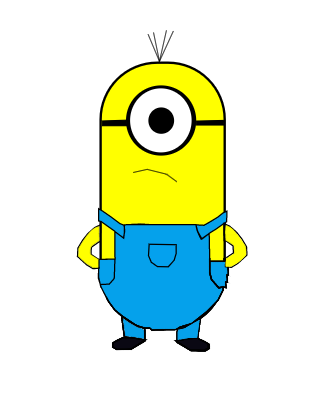

Apresentação
Em aula eu utilizei esta ferramenta para a modificação de imagens com a finalidade de criar banners, logos e desenhos
Inkscape
Inkscape é um software livre para editoração eletrônica de imagens e documentos vetoriais, com base numa versão mais avançada do antigo Sodipodi no qual teve origem. Trata-se assim de um fork considerado de sucesso.
Primeira logo
Em uma das aulas com o professor fui instruido utilizar de um personagem para criar uma logo.
Este foi o resultado.
*Uma logo melhor e mais original está sendo trabalhada.
Desenhos
Aqui está alguns desenhos 100% feitos utilizando a ferramenta.
*Estes são desenhos vetoriais ou seja: não perdem qualidade ao serem diminuidos ou aumentados